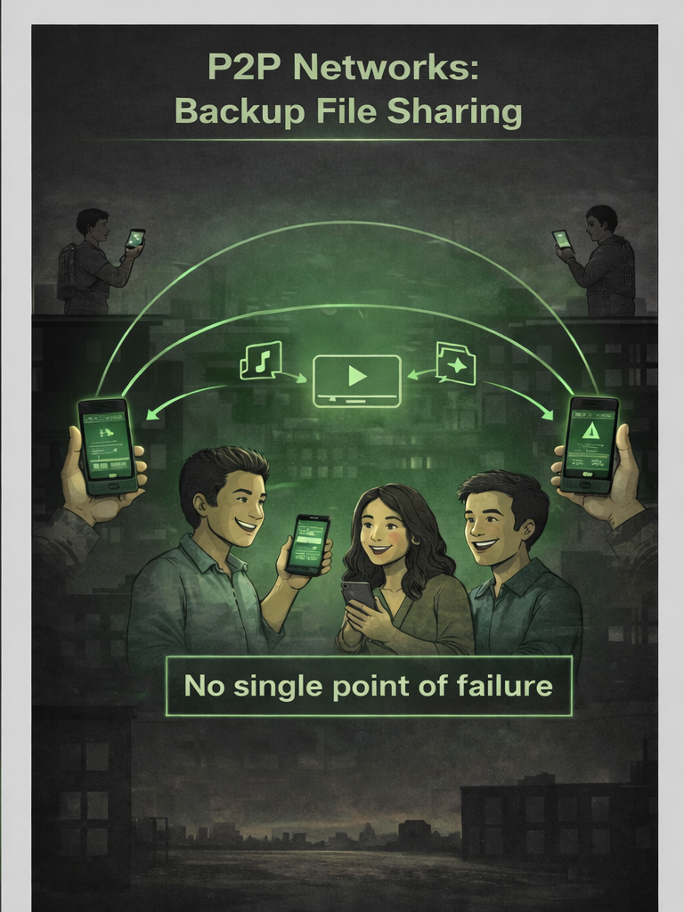
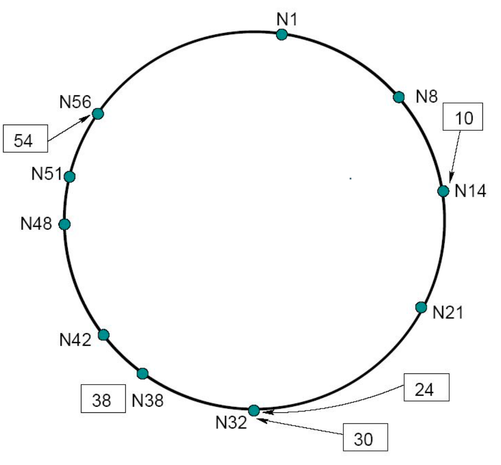

Section IX: Applications and Synthesis · Lesson 04-AS
Final Technical Review
Why This Technical Review Matters
- This course moved quickly across cryptography, distributed systems, consensus, Bitcoin, Ethereum, and forensics
- The final exam asks you to explain how these ideas fit together, not just recognize isolated terms
- Today is a focused rebuild of the technical stack before the course closes
Technical Review Objectives
By the end of this review, you should be able to:
- Explain the core technical role of hashing, Merkle roots, and digital signatures in blockchain systems
- Contrast centralized, distributed, permissioned, and permissionless architectures
- Compare classical consensus, Proof of Work, and Proof of Stake at a high level
- Reconstruct the key technical ideas behind Bitcoin and Ethereum
- Explain how blockchain forensics relies on both transparent ledgers and off-chain identity links
The Blockchain Stack at a Glance
- Cryptography gives integrity, commitments, and authorization
- Peer-to-peer networking moves transactions and blocks without a central server
- Consensus lets many nodes converge on one ledger history
- Ledger/data structures record history in a tamper-evident form
- Applications build wallets, tokens, smart contracts, and services on top

One Transaction, End to End
- A user creates a transaction and signs it with a private key
- The transaction is broadcast across a peer-to-peer network
- Nodes validate structure, signatures, and policy rules
- A miner or validator proposes a block containing the transaction
- Consensus determines whether that block becomes part of the accepted history
- The transaction later becomes evidence for accounting, auditing, or forensics
Why Cryptography Matters in Blockchain
- Blockchain does not eliminate trust problems by magic
- It replaces some trust in institutions with trust in math, protocol rules, and distributed verification
- Cryptography helps answer three core questions:
- Has data changed?
- Who authorized this action?
- Can many parties verify the same claim efficiently?
Hashing: What Problem Does It Solve?
- A cryptographic hash maps arbitrary input to a fixed-length digest
- Hashes are used as compact fingerprints of data
- In blockchains, hashes support:
- Tamper evidence
- Block linking
- Commitments to large data sets
- Efficient verification
Hash Properties That Matter for Blockchain
- Deterministic: same input, same output
- Preimage resistant: hard to recover the original input from the digest
- Second-preimage resistant: hard to find a different input with the same digest as a chosen message
- Collision resistant: hard to find any two distinct inputs with the same digest
- Avalanche effect: small input changes produce very different outputs
Avalanche Effect: Tiny Change, Very Different Output
- One small change in input should produce a radically different digest
- That makes hash outputs hard to predict and helps expose tampering
Hash("HELLO")
3615f80c9d293ed7402687f94b22d58e...
Hash("HELLo")
c6f4b0a7af12e91b3ca3e1e7100e2971...Hashing in Blockchain Practice
- Blocks include hashes of previous blocks to form a chain
- Transactions and headers are hashed repeatedly during validation and consensus
- Nodes can compare short digests instead of entire files or histories
- If a hash-linked record changes, later hashes no longer match
Merkle Trees: Why They Exist
- A block can contain many transactions
- Instead of storing every transaction in the header, the system commits to them with a tree of hashes
- Leaf hashes represent individual items
- Parent hashes combine child hashes until a single top value remains
- Top value: the Merkle root
Why the Merkle Root Matters
- It is a compact commitment to all transactions in the block
- Changing even one transaction changes the Merkle root
- It allows efficient inclusion proofs without downloading the full block body
- It lets lightweight clients verify membership with a path of sibling hashes
- The Merkle root is not just another field in the block header
- It is the block’s compact cryptographic commitment to the full transaction set
- It matters because it enables:
- Tamper detection
- Efficient verification
- Lightweight client proofs
- Header-first validation strategies
Asymmetric Crypto and Digital Signatures
- Public-key cryptography separates a public verification key from a private signing key
- In blockchain, signatures are often more important than encryption
- A valid signature shows that the holder of the private key authorized the transaction
- Other nodes can verify that authorization using only the public key or address data
Keys, Wallets, Addresses, and Ownership
- A private key is the critical secret
- A public key is derived from the private key and supports verification
- An address is usually a shorter identifier derived from public-key material or script conditions
- A wallet manages keys, addresses, and signing operations
- Control of funds depends on control of keys, not on knowing someone’s name
When Cryptography Fails in Practice
- Strong algorithms do not help if implementations are weak
- Common failures include:
- Poor randomness
- Weak key generation
- Key leakage
- Bad validation logic
- Unsafe wallet recovery procedures
- Blockchain losses often come from operational failures, not broken math
Cryptographic Challenges Moving Forward
- Quantum risk is more serious for current public-key systems like RSA and ECC than for hash functions
- Hash-based security is weakened by Grover-style speedups, but not destroyed in the same way signature systems are threatened by Shor-style attacks
- Blockchain migration challenges include:
- Large installed key base
- Long-lived addresses
- Backward compatibility
- “Harvest now, decrypt later” style concerns for public data and exposed keys
Case Reminder: Milk Sad and Bad Entropy
- Wallet safety depends on good randomness
- If seed phrases or private keys are generated from weak entropy, the wallet may be predictable
- The lesson is broader than one bug:
- Cryptography can be correct on paper and still fail in deployment
- Blockchain systems amplify the cost of key-management mistakes because irreversible transfers are easy
Centralized vs Distributed Architectures
- A centralized system has a clear control point and often a simpler operating model
- A distributed system spreads responsibility across multiple machines or organizations
- Blockchain adopts distributed designs to reduce reliance on a single trusted operator
- This improves resilience in some ways, but also adds coordination, latency, and consistency problems

Why Blockchain Pushes Toward P2P
- Permissionless blockchains try to minimize trust in any single operator or organization
- A central server would have to be trusted not to fail, censor, or behavoe maliciously
- Blockchain networks want many participants to receive transactions, validate blocks, relay information, and maintain ledger history
- P2P design supports openness, redundancy, and censorship resistance, while permissioned systems often reintroduce more trusted service layers
Gossip vs DHTs
- Gossip/unstructured relay is good for spreading new information widely
- Distributed Hash Table/structured overlay routing is good for efficient lookup in large networks
- Tradeoff:
- Gossip favors resilience and simple dissemination
- DHTs favor efficient routing and discovery


Peer Discovery and Churn
- New nodes need a way to find their first peers
- Real networks must handle nodes joining, leaving, failing, or moving
- A healthy blockchain network needs:
- Bootstrapping mechanisms
- Ongoing peer replacement
- Diversity in connections
- Tolerance for churn and partial partitions
P2P Threats: Sybil and Eclipse
- A Sybil attack tries to gain influence by creating many fake identities
- An eclipse attack tries to isolate a node from honest peers and control what it sees
- These attacks matter because even strong cryptography is not enough if a node’s network view is manipulated
- Open systems need technical and economic defenses, not just identity checks
Permissioned vs Permissionless Systems
- Permissionless systems allow open participation and must resist unknown adversaries
- Permissioned systems restrict membership and usually know who participants are
- This changes:
- Admission control
- Identity management
- Governance
- Privacy expectations
- Consensus design
Where Hyperledger Fabric Fits
- Fabric is a permissioned distributed ledger platform
- It assumes known organizations, managed identities, and policy-driven participation
- Trust is managed through:
- MSPs and certificate authorities
- Endorsement policies
- Ordering services
- Governance agreements
What Consensus Is Actually Trying to Guarantee
- Consensus is about getting many nodes to agree on ledger state or history
- Earlier in the course, we framed the core properties as SLVA:
- Safety: honest nodes do not finalize conflicting outcomes
- Liveness: the system continues making progress
- Validity: decided values must satisfy the protocol’s rules
- Agreement: honest nodes converge on the same result
Classical vs Economic Consensus
- Classical consensus usually assumes known participants and focuses on message exchange, quorum rules, and fault models
- Economic consensus adds incentives, resource costs, or stake penalties to shape behavior in open systems
- Permissioned ledgers: usable because membership is curated and identity is managed
- Permissionless blockchains: needed because anyone may try to participate, relay, or attack
Proof of Work
- PoW uses a computational puzzle to make block production costly
- Producing a block is expensive, but checking a proposed block is cheap
- This creates an objective eligibility rule for blocks in open networks
- Security comes from the real-world cost of rewriting history at scale

Difficulty, Work, and Probabilistic Finality
- The target determines how hard it is to find a valid block
- Difficulty adjustment may be used to help keep average block intervals near an intended schedule
- Finality in PoW is usually probabilistic:
- A payment becomes safer as more work accumulates after it
- The chain is never impossible to fork or replace, but doing so becomes costlier as more work accumulates
Common PoW Attack Themes
- Majority hash-power attacks: dominant mining power can outcompete honest miners and replace recent chain history.
- Double-spend attempts: an attacker spends funds, then tries to build an alternate branch that excludes the original payment.
- Selfish mining and strategic withholding: miners keep blocks private to gain an advantage over honest miners.
- Censorship through block construction choices: miners or pools can refuse to include selected transactions.
- Network-level attacks: routing, eclipse, or partition attacks distort what miners and nodes see.
Proof of Stake
- PoS replaces energy-intensive work with stake-weighted participation
- Core flow:
- A proposer is selected for a slot or round
- A committee attests to the proposed block
- Votes accumulate toward checkpoints and finality
Validators, Committees, and Finality
- A validator is a participant authorized by stake to help secure the chain
- Committees are randomly selected subsets of validators that check proposals in a slot
- This structure avoids every validator talking to every other validator on every block
- Every epoch, a stake-weighted supermajority vote finalizes the blocks
Common PoS Attack Themes
- Nothing-at-stake incentives: validators may be tempted to support multiple forks if equivocation is not punished.
- Long-range attacks: old validator keys or historical stake can be abused to fabricate an alternate past.
- Weak subjectivity: new or offline nodes need trustworthy recent checkpoints to avoid bad histories.
- Censorship and cartel behavior: large validator groups can coordinate to delay or exclude targeted transactions.
- Bribery and concentration risks: stake concentration can make collusion or economic coercion more effective.
Consensus Families
- Permissioned/classical consensus gives strong deterministic finality under curated membership
- PoW gives open participation with computationally costly block production and probabilistic finality
- PoS gives open participation with stake-based security enforced through slashing and structured finality
- The right question is not “which one is best?” but “which assumptions and tradeoffs fit the system?”
Why Bitcoin Emerged
- Bitcoin grew out of long-running digital cash efforts and cypherpunk thinking
- The 2008 financial crisis sharpened distrust in centralized financial intermediaries
- Thecombination of existing concepts drawn from cryptography, peer-to-peer networking, trust and conesensus, and lessons from failed digital cash efforts provided the foundation for Bitcoin and subsequent blockchain techniolgies
- Nakamoto (Proof-of-Work) consensus was the final key to making the decentralized digital cash work
Bitcoin’s Core Design Synthesis
- Digital signatures define who can authorize spending
- Peer-to-peer networking spreads transactions and blocks
- Proof of Work helps open participants converge on one history
- Hash-linked blocks and Merkle commitments make history tamper-evident
- Together, these mechanisms address double-spending without a central operator
Bitcoin Block Structure
- A Bitcoin block contains a header plus a body of transactions
- Key header fields include:
- Version
- Previous block hash
- Merkle root
- Timestamp
- Difficulty target representation
- Nonce
Bitcoin Transactions and the UTXO Model
- Bitcoin tracks spendable outputs, not account balances
- A transaction consumes old outputs and creates new outputs
- Change usually returns to a new output controlled by the sender
- This model matters for:
- Transaction structure
- Fee calculation
- Wallet behavior
- Forensic clustering heuristics
Bitcoin Monetary Policy and Difficulty
- New coins enter circulation through block subsidies
- The subsidy schedule declines over time through halvings
- The total supply cap is designed around a 21 million BTC limit
- Difficulty adjusts every 2016 blocks to target about a 10-minute average block interval despite changes in hash rate
Bitcoin Nodes, Relay, and Peer Discovery
- Full nodes validate rules and maintain the ledger independently
- Transactions and blocks spread through peer-to-peer relay
- New nodes need a bootstrapping path to peers
- Once connected, nodes keep learning about the network through peer communication and gossip propagation
Mining Pools and Their Role
- Solo mining has high reward variance
- Pools reduce variance by letting miners combine effort and share payouts
- Pools change incentives and centralization pressures even if the protocol remains permissionless
- Pools are economically important, but they are not identical to the protocol itself
- Concentration in pools can create real security concerns
Ethereum’s Goals
- Ethereum extends blockchain beyond payments into general-purpose programmable state
- The core vision is a platform for smart contracts and decentralized applications
- Ethereum shifts the central design question from “How do we transfer digital money?” to “How do we execute shared logic on a decentralized system?”
EVM, Gas, and Global State
- Ethereum maintains a shared global state rather than Bitcoin’s UTXO set
- The EVM executes contract logic deterministically
- Gas meters computation and storage use; the base fee is burned while tips can go to the proposer
- If a transaction runs out of gas, state changes revert but the spent gas is still lost
Accounts vs UTXOs
- Bitcoin’s UTXO model represents value as discrete spendable outputs
- Ethereum’s account model represents balances and contract state directly
- The difference affects:
- Transaction structure
- Smart contract design
- Wallet semantics
- Forensics and tracing
The Merge and Two-Layer Ethereum
- Ethereum moved from PoW to PoS in The Merge
- The modern system separates:
- Execution layer: transactions, EVM execution, state transitions
- Consensus layer: validator coordination, fork choice, finality
- The application state stayed continuous, but the block-production and finality engine changed underneath it
- That separation matters because scaling, client software, and upgrades often affect one layer more than the other
EOAs vs Contract Accounts
- Externally Owned Accounts (EOAs) are controlled by private keys and initiate transactions
- Contract accounts hold code and storage, but only execute when called
- This distinction matters for:
- Wallet behavior and nonce handling
- Access control and smart contract design
- Forensics, because some addresses are users and some are programs
Block Building
- Block construction is often specialized rather than handled only by the proposer
- Maximal Extractable Value (MEV) is the value gained from transaction ordering, inclusion, or exclusion
- Key actors:
- Searchers identify profitable orderings
- Builders assemble candidate blocks
- Relays forward bids and blocks to proposers
- That makes Ethereum block production an ecosystem with real censorship and centralization pressure
Smart Contracts: What They Are
- A smart contract is code stored on-chain and executed by the network
- It can hold state, enforce rules, and expose callable functions
- Smart contracts support:
- Tokens
- Exchanges
- Lending
- Governance
- NFT logic
contract Counter {
uint256 public count;
function inc() external { count += 1; }
}Smart Contract Risks and Security
- Bugs become security problems when code directly controls assets or permissions
- Important risks include reentrancy, bad access control, unsafe upgrades, oracle dependence, and randomness misuse
- Reentrancy: an external call lets untrusted code call back before state is updated
- Reused code and copied patterns can spread both best practices and vulnerabilities at scale
- Code quality, governance, and operational controls still matter
Oracles and Off-Chain Dependencies
- Smart contracts cannot directly observe the outside world
- Oracles bridge in prices, events, or other off-chain facts
- That makes them useful, but also reintroduces trust and manipulation risk
- If the oracle is wrong, delayed, or censored, what does the contract do?
Where and why did trust re-enter the system?
Layer 2s, Rollups, and Blobs
- Layer 2 systems move execution or aggregation away from Layer 1 while still relying on Ethereum for settlement or data availability
- Optimistic rollups rely on fraud proofs and challenge periods
- ZK rollups rely on validity proofs that show the state transition was correct
- Blob data from EIP-4844 gives rollups cheaper temporary data space without expanding permanent state
Ethereum Upgrades, EIPs, and Client Diversity
- EIPs are the formal mechanism for proposing and standardizing protocol changes
- Ethereum evolves through coordinated upgrades rather than staying frozen
- Client diversity matters because a monoculture bug can threaten liveness or safety across the network
Examples to keep in view
- The Merge
- Rollup-centered scaling
- Blob data and the broader danksharding roadmap
Tokens and Standards
- Tokens are smart-contract-defined assets or rights
- Common standards:
- ERC-20 defines fungible-token balances, transfers, and allowances
- ERC-721 defines unique NFT ownership and transfer
- ERC-1155 supports mixed fungible and non-fungible token IDs in one contract
- ERC-165 lets contracts advertise which interfaces they implement
Native ETH is a protocol asset; most tokens and NFTs are smart-contract assets that follow shared standards.
NFTs and Tokenization
- Fungible tokens are interchangeable units; NFTs track distinct records or items
- Tokenization links blockchain records to claims about assets, access, identity, or provenance
- The token is the on-chain record, but its legal, social, or physical meaning depends on surrounding rules and institutions
Graph Thinking and Heuristics
- Blockchain forensics often begins with transaction graph structure
- Common heuristics and patterns:
- Fan-in/fan-out
- Common-input ownership (CIOH)
- Peeling chains and change detection
- Address clustering
Heuristics generate investigative leads and clustering hypotheses, but they are clues, not proof.
Obfuscation and Countermeasures
- Adversaries use mixers, CoinJoin, bridges, chain hopping, and privacy-preserving assets to make tracing harder
- Investigators respond with flow analysis, cross-chain tracing, timing correlation, and service-level intelligence
Privacy Coins
- Privacy coins change the problem because the transaction graph is intentionally hidden or degraded
- Monero uses ring signatures, stealth addresses, and RingCT to hide sender, receiver, and amount
- Zcash uses optional shielded transactions backed by zk-SNARKs
- Investigators often pivot from on-chain tracing toward:
- Entry and exit points
- Timing and amount correlation
- Device or server-side evidence
Attribution
- On-chain transparency alone rarely gives a real-world name immediately
- Attribution often depends on off-chain links such as:
- Exchange records
- KYC/AML processes
- Seized devices or cloud accounts
- OSINT and behavioral traces
- The key lesson is that blockchain forensics combines technical tracing with institutional and investigative leverage
Course Purpose
- It is the combination of:
- Cryptographic commitments
- Distributed communication
- Consensus under adversarial conditions
- Incentive design
- Application-layer logic
- If one layer is weak, the overall system can still fail
Final Exam Review Prompts
- What does the Merkle root do, and why is it in the block header?
- Why are digital signatures central to blockchain ownership?
- Why does a permissionless blockchain need a different consensus model than a permissioned ledger?
- How does Bitcoin’s UTXO model differ from Ethereum’s account model?
- Why are blockchain forensics possible even when users begin with pseudonymous addresses?
References
Sources
[1]
D. Yaga, P. Mell, N. Roby, and K. Scarfone, “Blockchain technology overview,” National Institute of Standards and Technology, Gaithersburg, MD, NIST IR 8202, Oct. 2018. doi: 10.6028/NIST.IR.8202.
[2]
A. Narayanan, J. Bonneau, E. Felten, A. Miller, and S. Goldfeder, Bitcoin and Cryptocurrency Technologies. Princeton University Press, 2016.
[3]
J. Bonneau, A. Miller, J. Clark, A. Narayanan, J. A. Kroll, and E. W. Felten, “SoK: Research Perspectives and Challenges for Bitcoin and Cryptocurrencies,” in 2015 IEEE Symposium on Security and Privacy, 2015, pp. 104–121. doi: 10.1109/SP.2015.14.
[4]
A. M. Antonopoulos, Mastering Bitcoin: Programming the open blockchain, Second edition. Sebastopol, CA: O’Reilly, 2017.
[5]
A. M. Antonopoulos and G. Wood, “Mastering Ethereum.” 2018. Available: https://github.com/ethereumbook/ethereumbook
[6]
R. C. Merkle, “A Digital Signature Based on a Conventional Encryption Function,” in Advances in Cryptology — CRYPTO ’87, vol. 293, C. Pomerance, Ed., Berlin, Heidelberg: Springer Berlin Heidelberg, 1988, pp. 369–378. doi: 10.1007/3-540-48184-2_32.
[7]
S. Nakamoto, “Bitcoin: A Peer-to-Peer Electronic Cash System.” Satoshi Nakamoto Institute, Oct. 31, 2008. Accessed: Sept. 12, 2025. [Online]. Available: https://cdn.nakamotoinstitute.org/docs/bitcoin.pdf
[8]
Bitcoin.org Developers, “Wallets (Developer Guide).” 2024. Available: https://developer.bitcoin.org/devguide/wallets.html
[9]
U.S. Securities and Exchange Commission, “U.s. Securities and exchange commission.” Accessed: Mar. 18, 2026. [Online]. Available: https://www.sec.gov
[10]
D. Boneh and V. Shoup, “Quantum Cryptography — Implications.” 2020. Available: https://intensecrypto.org/public/lec_19_quantum.html
[11]
National Institute of Standards and Technology, “Post-quantum cryptography project.” Accessed: Mar. 23, 2026. [Online]. Available: https://csrc.nist.gov/projects/post-quantum-cryptography
[12]
C. Reitter, “Milk sad: Update #2 - trust wallet ranges, uncompressed pubkeys.” Accessed: Mar. 28, 2026. [Online]. Available: https://milksad.info/posts/research-update-2/
[13]
UK Government Chief Scientific Adviser, “Distributed Ledger Technology: Beyond Block Chain.” 2016. Available: https://assets.publishing.service.gov.uk/government/uploads/system/uploads/attachment_data/file/492972/gs-16-1-distributed-ledger-technology.pdf
[14]
A. Singh, T.-W. Ngan, P. Druschel, and D. S. Wallach, “Eclipse Attacks on Overlay Networks: Threats and Defenses,” in Proceedings IEEE INFOCOM 2006. 25TH IEEE International Conference on Computer Communications, Barcelona, Spain: IEEE, 2006, pp. 1–12. doi: 10.1109/INFOCOM.2006.231.
[15]
E. Heilman, A. Kendler, A. Zohar, and S. Goldberg, “Eclipse Attacks on Bitcoin’s Peer-to-Peer Network.” Accessed: Oct. 21, 2025. [Online]. Available: https://eprint.iacr.org/2015/263
[16]
E. Androulaki et al., “Hyperledger fabric: A distributed operating system for permissioned blockchains,” in Proceedings of the Thirteenth EuroSys Conference, Porto Portugal: ACM, Apr. 2018, pp. 1–15. doi: 10.1145/3190508.3190538.
[17]
Hyperledger, “A Blockchain Platform for the Enterprise — Hyperledger Fabric Docs main documentation.” Accessed: Oct. 27, 2025. [Online]. Available: https://hyperledger-fabric.readthedocs.io/en/release-2.5/
[18]
V. Buterin, “Ethereum: A Next-Generation Smart Contract and Decentralized Application Platform.” Ethereum.org, 2014. Available: https://ethereum.org/content/whitepaper/whitepaper-pdf/Ethereum_Whitepaper_-_Buterin_2014.pdf
[19]
ethereum.org, “The merge.” Accessed: Mar. 23, 2026. [Online]. Available: https://ethereum.org/roadmap/merge/